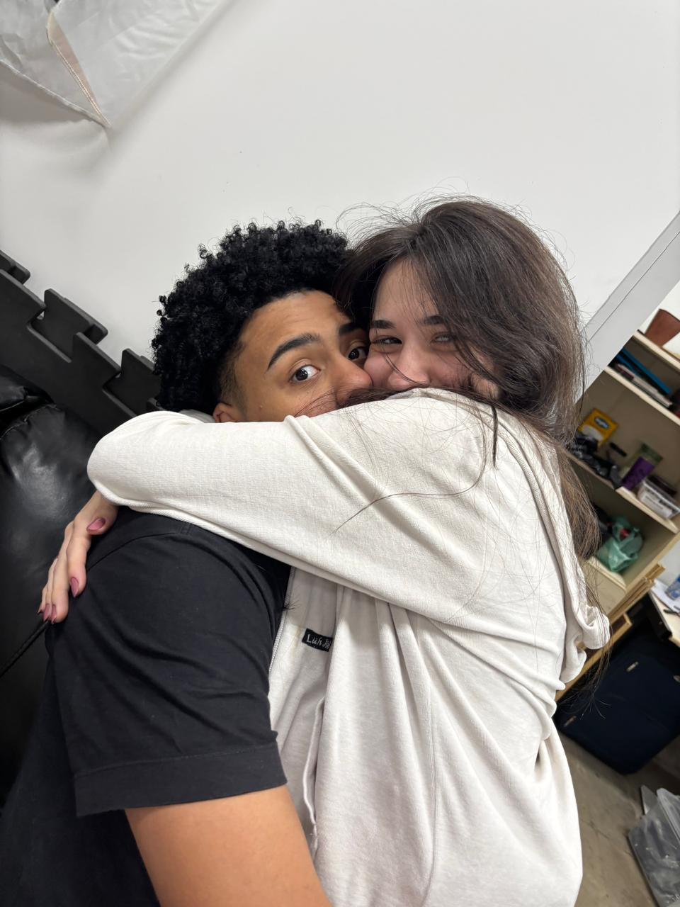
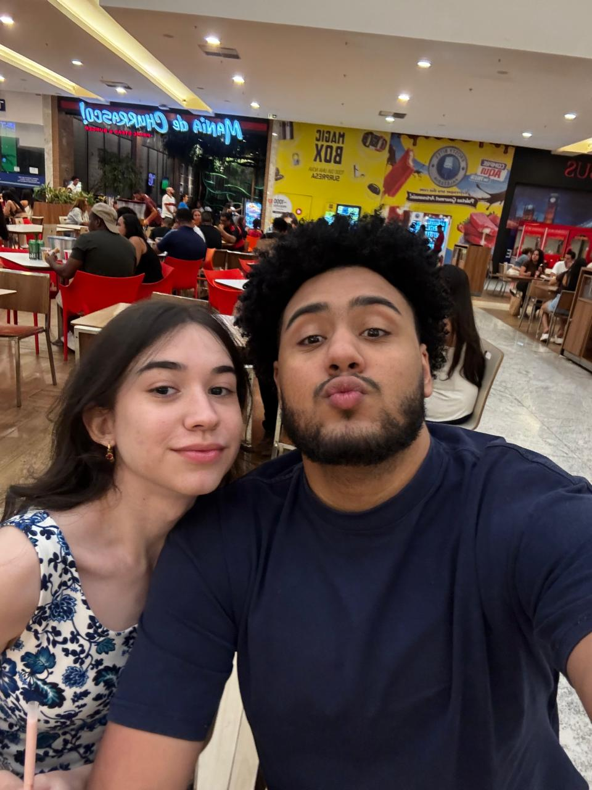
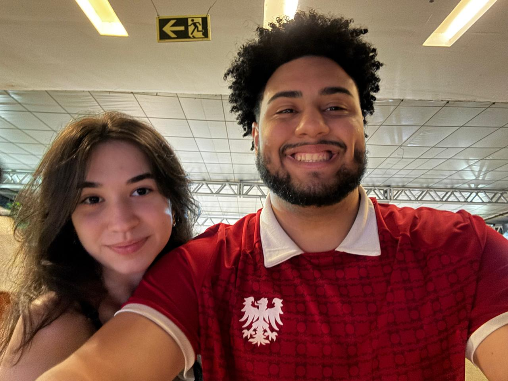
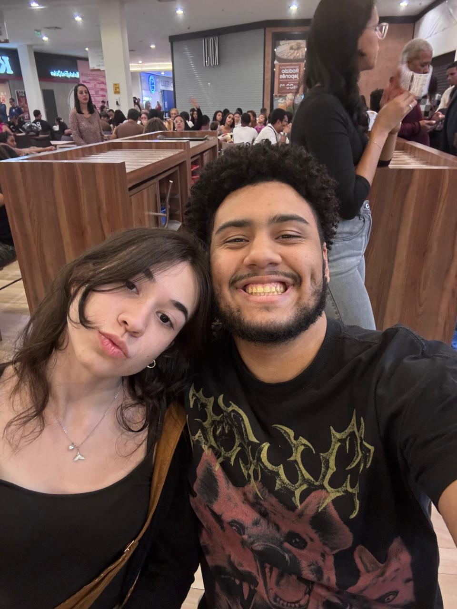
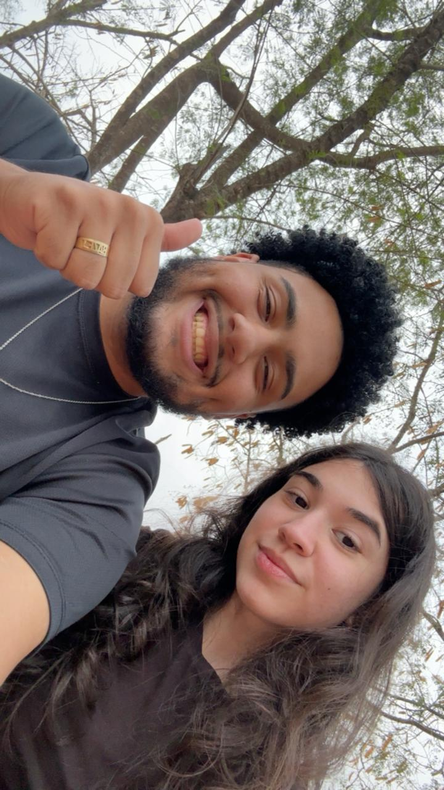

Querida Rafaella,
Não sei se sou um bom namorado, claramente não sou o que você merece, pois você merece o melhor que a vida tem pra oferecer, e eu mesmo não sendo o melhor homem do mundo, tento ser o melhor homem pra você, para podermos ter um futuro juntos, construir uma família e ser felizes. Meu maior medo é não conseguir sempre transparecer o quanto eu te amo, e o quanto eu sou grato por ter você na minha vida.
Desde que eu te conheci voltei a ser o Giorgio que eu nasci pra ser, voltei a ver a vida de uma forma mais bonita, tive vontade de viver, e poder viver ao seu lado é o que me move diariamente para tentar o melhor de mim. Eu te amo, e nesses 5 meses que se passaram, eu posso dizer que eu tenho sorte. Sorte por ter a oportunidade de conhecer uma pessoa tão pura, inteligente e amorosa que é você, isso porque falo somente sobre conhecer, imagina o quanto eu sou grato por poder viver ao lado de alguém como você?
O jeito que eu me sinto por ter você ao meu lado, é o sentimento de estar seguro, me sinto seguro ao lado, seguro por ter alguém que eu realmente entendi que é o amor. Eu achava que a maior prova de amor seria morrer por alguém, eu desde que senti seu amor por mim já não acho que essa seja a verdadeira maior prova de amor, a maior prova de amor que é VIVER por alguém, viver com você, para você, por você.
Meu maior medo desde novo sempre foi morrer, esse medo me consome há anos, a ideia de acabar tudo e não ter certeza do que vem, um dia desses minha mãe compartilhou esse mesmo medo comigo, e eu cheguei que o medo nunca foi sobre morrer, sempre foi sobre estar sozinho, perder o seu porto seguro. Nessa conversa nada alta astral, eu percebi que você se tornou essa pessoa pra mim, alguém que eu não quero nunca perder, nunca deixar de viver o máximo ao seu lado, aproveitar cada momento da nossas vidas juntos, até que o meu último suspiro seja do seu lado, quero ter a oportunidade e a honra de passar uma vida ao seu lado e o último momento dela com você.
Em meio esse papo deprê, a mensagem que eu quero deixar sobre tudo isso é, eu te amo muito, o tanto que eu não consiga falar e medo de não demonstrar. E, que eu quero viver ao seu lado e ser o melhor homem pra que você sempre se sinta amada, segura e confortável, pois é assim que me sinto tendo você em minha vida. Eu sou seu,
quero ser eternamente seu, e quero viver uma vida com o melhor do que temos pra viver, visitar países, nos conhecer cada vez mais, nunca deixar de rir ao seu lado, ser sempre leve, te amar e estar com você nunca por comodidade, mas por esse sentimento inefável que eu tenho por você e por tudo que temos pra construir JUNTOS, que ninguém fale o que devemos ou não fazer, sentir e viver. Porque só nós sabemos o que sentimos um pelo outro. Mais uma vez, caso não tenha entendido, eu te amo. Feliz 5 meses, obrigado por esses tão felizes meses ao seu lados, que vire anos, décadas e que se inventarem a vida eterna por meio de robôs, eu amaria passar a eternidade com a Rafaellatron. Eu te amo, ma luv.